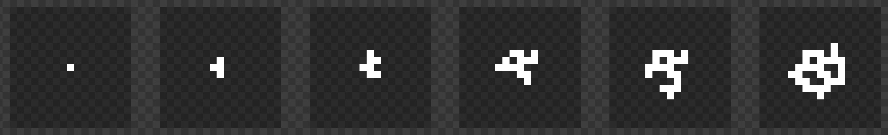
Здесь я представил проход примерно 5-и симуляций. /*правила*/ для построения пока не известны, их стоит изучить, чуть позже.
Известно только то, что нам нужно избежать диагональных комнат, чтобы выход одной комнаты был четко равен входу следующей.
Так же нам стоит спланировать сами комнаты.
Типов комнат всего 5:
- /*impasse*/ - тупик
- /*corridor*/ - коридор
- /*corner*/ - угловая комната
- /*3_exit*/ - комната с тремя выходами
- /*crossway*/ - комната с четырьмя выходами
- /*crematorium*/ - комната для освобождения параноиков
Мало того что сторон 4, так еще и вход в комнату не всегда слева.
Как раз для этого чтобы не создавать разные комнаты для разных углов - мы будем находить их угол поворота и поворачивать!
Вот я для теста нарисовал тайлы 2-х видов.
Если над, качайте (.png):
Если бы мы строили с помощью /*DLA*/, то выглядело бы так:
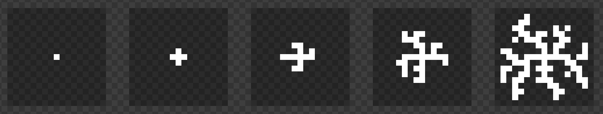
Прикольно, но не интересно, комнаты не будут пересекаться и получится что для того чтобы пройти по другой ветке, игроку придется возвращаться в центр карты.
Можно конечно, совместить /*DLA*/ и /*GOL*/, сгенерировать с /*DLA*/ почистить и добавить переходы с помощью /*GOL*/, но это целых два алгоритма, а мы боримся за производительность, простоту восприятия и качество.
Думаю симуляция нейронной сети выглядела бы так:
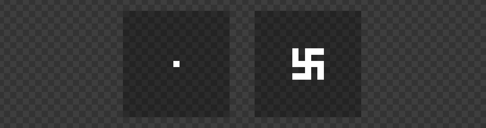
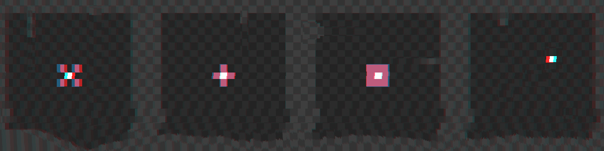
У первой 4 розовых соседа, у второй 4, у третей 8, еще год и у четвертой тоже появятся /-розовые-/ друзья.
Чтобы избежать диагональных комнат, будем считать и применять правила диагональных соседей отдельно от перпендикулярных.
/[s]
function getNeighboursCount(x, y, diagonal=false, getSides=0){
let count = 0;
let posArray = (!diagonal) ? [[-1,0] , [+1,0] , [0,-1] , [0,+1]] : [[-1,-1] , [+1,-1] , [-1,+1] , [+1,+1]];
let sideNames = (!diagonal) ? ["left" , "right" , "up" , "down"] : ["left-up" , "right-up" , "left-down" , "right-down"];
let sides = "";//list of sides
if(getSides==2) sides=[];
let existCount=0;//for names
for (var p = 0; p < posArray.length; p++) {
if(map[x+posArray[p][0]]!=null && map[x+posArray[p][0]][y+posArray[p][1]]!=null ){
if(getSides==2) sides.push(posArray[p])
if(getSides==1) sides+=(((existCount>0)?",":"")+sideNames[p]);
else count++;
existCount++;
}
}
if(getSides>0) return sides;
else return count;
}
[s]/
Метод принимает позицию клетки у кторой нужно посчитать соседей, булевый выбор диагональных соседей и тип выхода:
- 0 - посчитает кол-во соседей
- 1 - даст список сторон, перечисленных через запятую, это понадобиться для определения типа комнаты
- 2 - даст массив векторов которые указывают на выходы из комнаты
протестим на этой карте:
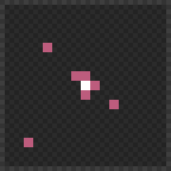
/[s]
getNeighboursCount(8, 8, true, 0);// 1
getNeighboursCount(8, 8, false, 0);// 3
getNeighboursCount(8, 8, false, 1);// "right,up,down"
getNeighboursCount(8, 8, false, 2);// [[+1,0] , [0,-1] , [0,+1]]
[s]/
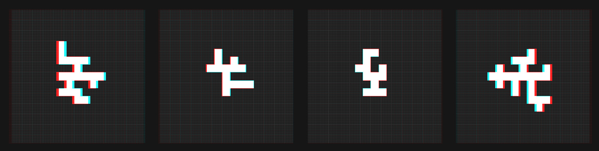
попробуем увеличить кол-во проходов до 35:
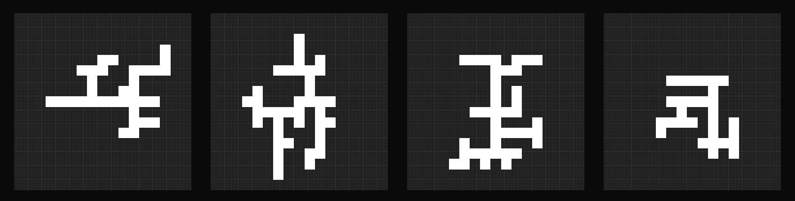
хмм... неполохо, но нет колечек, надо добавить, а то от /*DLA*/ не отличить...
добавим такое правило:
клетка активируется если перпендикулярных соседей 1 и диагональных меньше 3, шанс 0.05
кол-во активных клеток увеличится, поэтому уменьшим кол-во симуляций до 25
теперь if блок такой:
/[s]
if(
(Math.random()<DefChance && nbs>0 && dnbs<3 && nbs+dnbs<3)
||(Math.random()<0.05 && nbs==1 && dnbs<3)
){
newMap[x][y] = 1;
}
[s]/
Результат:
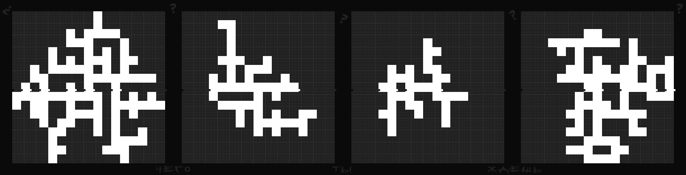
Все равно колечек мало.................................
НО есть такие места где они вполне могли бы быть!
Уменьшим кол-во симуляций до 15
Добавим бездиагональное соединение с большим шансом:
/[s]
(Math.random()<0.5 && nbs>0 && dnbs==0)
[s]/
Cоединения в плоских длинных стенках:
/[s]
(Math.random()<0.7 && nbs==2 && dnbs==4)
[s]/
Можно сделать так:
/[s]
var DefChance = 0.4;
var ConnectionChance = 0.1;
var NonDiagConnectionChance = 0.7;
var BinConnectionChance = 0.3;
function doSimulationStep(){
let newMap = Map(1);
forEachTile(map, function(x,y) {
if(map[x][y]==null){
newMap[x][y] = null;
let nbs = getNeighboursCount(x, y);
let dnbs = getNeighboursCount(x, y, true);
if(
(Math.random()<DefChance && nbs>0 && dnbs<3 && nbs+dnbs<3)
||(Math.random()<ConnectionChance && nbs==1 && dnbs<3)
||(Math.random()<NonDiagConnectionChance && nbs>0 && dnbs==0)
||(Math.random()<BinConnectionChance && nbs==2 && dnbs==4)
){
newMap[x][y] = 1;
}
}
});
map = newMap;
//drawMap();
}
[s]/
Результат:
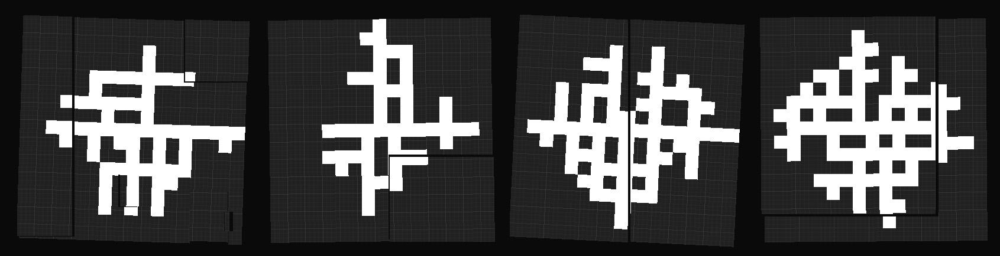
Пожалуй на этом и остановимся, на самом деле здесь можно долго подбирать, накручивать параметры.
Так же можно создать метод очистки, он будет работать так же как и метод симуляции, только вместо активации будет уничтожать ненужные клетки на карте, и вызываться будет после всех проходов симуляции.
Сейчас двигаемся дальше.
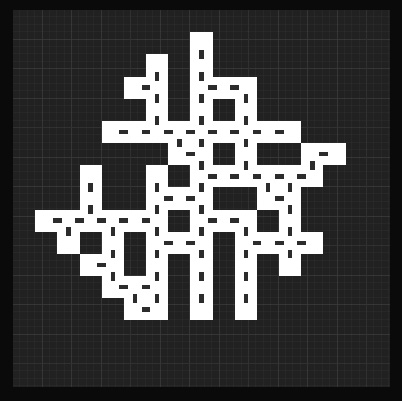
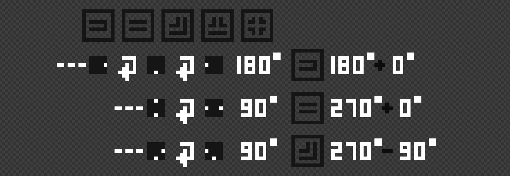
/*Линия 1*/ - 5 типов комнат.
/*Линия 2 - 4*/ - примерный подсчет поворота и конечного угла
/*1*/: - комната на карте, счетчик определил что у нее есть одна дверь справа;
- поворачиваем на 90, дверей слева не найдено;
- поворачиваем на 90, есть дверь слева;
- всего повернули на 180deg, опознана как комната типа "тупик";
- 360 - 180 = 180;
- дополнительный поворот = 0;
/*2*/: - комната на карте, счетчик определил что у нее есть две двери: сверху и снизу;
- поворачиваем на 90, есть дверь слева;
- всего повернули на 90deg, опознана как комната типа "коридор";
- 360 - 90 = 270;
- дополнительный поворот = 0;
/*3*/: - комната на карте, счетчик определил что у нее есть две двери: справа и снизу;
- поворачиваем на 90, есть дверь слева;
- всего повернули на 90deg, комната не опознана, но найдено совпадение в /*списке*/;
- 360 - 90 = 270;
- дополнительный поворот = -90;
Так и будем проверять.
Третья комната нуждается в дополнительном /*списке*/
Он выглядит так:
/[s]
var roomDefine = {
'left': {type:0, addAngle:0},
'left,right': {type:1, addAngle:0},
'left,up': {type:2, addAngle:0},
'left,down': {type:2, addAngle:-90},
'left,right,up': {type:3, addAngle:0},
'left,right,down': {type:3, addAngle:180},
'left,down,up': {type:3, addAngle:-90},
'left,up,down': {type:3, addAngle:-90},
'left,right,up,down': {type:4, addAngle:0}
}
[s]/
он нужен для распознавания и обычных комнат и всяческих исключений.
Метод поворота комнат:
/[s]
function RotateSidesToNormalize(sn){
let sides = sn;
let count = 0;
while(sides.indexOf("left")!=0){
sides = sides.replace("right","do#wn").replace("up","ri#ght").replace("down","le#ft").replace("left","u#p");
sides = sides.replace(/#/g,"");
count++;
}
return {names:sides, angle:360-count*90};
}
[s]/
получает список сторон с дверьми,
пока не найдет дверь слева, поворачивает, считает.
возвращает объект с двумя параметрами: посчитанный угол комнаты с дверью слева и ее список сторон.
Теперь наш метод /*check*/ класса комнаты выглядит так:
/[s]
this.check = function(){
this.doors = getNeighboursCount(this.x, this.y, false, 2);
this.doorSides = RotateSidesToNormalize(getNeighboursCount(this.x, this.y, false, 1));
this.angle = (this.doorSides.angle==360)?0:this.doorSides.angle;
this.doorSides = this.doorSides.names;
this.type = roomDefine[this.doorSides].type;
this.angle += roomDefine[this.doorSides].addAngle;
}
[s]/
Ну и так понятно за что они отвечают.
Теперь наши комнаты умеют находить свой тип, поворачиваться и вставать на нужные места.
Ну че, протестим?
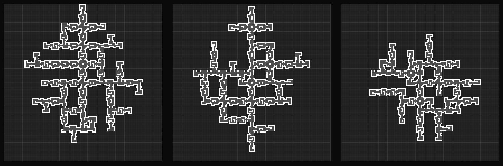
Гы
Вот интерактив теста:
ПроШу НАжМи СюДА.......
/!Пока!/
На самом деле статью мне просто было интересно писать, не для кого-то.
В принципе я большую часть своих проектов делаю для будущего себя, я даже сейчас чувствую как он презирая, наблюдает за клавишами под моими затекшими пальцами и восклицает.
Все /*правила*/ генерации менять ОБЯЗАТЕЛЬНО,
Я их быстро набросал, но из них можно много чего сделать.
Кто-то хочет чтобы я закончил.
Всем Доб�ʚ!
��� ��������